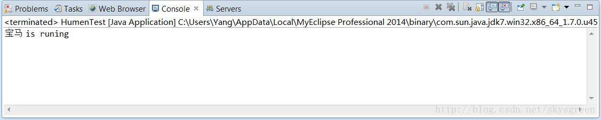
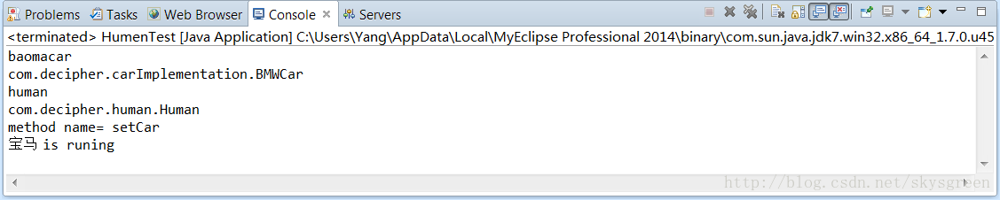

Spring的IoC核心就是控制反转，将对实现对象的操作控制器交出来，由IoC容器来管理，从配置文件中获取配置信息，Java对XML文档提供了完美的支持，dom4j功能强大，而下面我就用JDOM这一开源项目，利用它可以纯Java技术实现对XML文档的解析、生成、序列化来模拟实现IoC容器。
一、传统方式完成项目。
1.定义接口
package com.decipher.car;
public interface Car {
public String getBrand();
public void run();
}
2.接下来实现Car接口
package com.decipher.carImplementation;
import com.decipher.car.Car;
public class BMWCar implements Car{
private String MyBrand="宝马";
public String getBrand(){
return MyBrand;
}
public void run(){
System.out.println(MyBrand+" is runing");
}
}
3.新建一个Human类
package com.decipher.human;
import com.decipher.car.Car;
public class Human {
private Car car;
public Car getCar() {
return car;
}
public void setCar(Car car) {
this.car = car;
}
public void myCarRun(){
car.run();
}
}
4.最后编写测试类
package com.decipher.humen;
import com.decipher.car.Car;
import com.decipher.carImplementation.BMWCar;
import com.decipher.human.Human;
public class HumenTest {
public static void main(String[] args) throws Exception {
Human human=new Human();
Car car=new BMWCar();
human.setCar(car);
human.myCarRun();
}
}
5.运行结果如图：

二.JDOM模拟IoC容器反转控制
在编程之前要导入jdom.jar包到项目工程目录中。
1.新建BeanFactory
package com.decipher.spring;
public interface BeanFactory {
public Object getBean(String id);
}
2.实现BeanFactory接口
package com.decipher.spring;
import java.lang.reflect.Method;
import java.util.HashMap;
import java.util.List;
import java.util.Map;
import org.jdom.Document;
import org.jdom.Element;
import org.jdom.input.SAXBuilder;
public class ClassPathXmlApplicationContext {
//储存各个实例的键值对
private Map<String,Object> beans=new HashMap<String,Object>();
//构造方法
public ClassPathXmlApplicationContext() throws Exception{
//读取XML文档
SAXBuilder sb=new SAXBuilder();
//构造文档对象DOC
Document doc=sb.build(this.getClass().getClassLoader().getResource("beans.xml"));
//获取XML文档根元素
Element root=doc.getRootElement();
//获取根元素下所有的子元素
List list=root.getChildren("bean");
//遍历所有的Bean元素
for(int i=0;i<list.size();i++){
//取得第i个Bean元素
Element element=(Element)list.get(i);
//获取第i个Bean元素的id属性值，并将其存入到字符串变量id中
String id=element.getAttributeValue("id");
//获取第i个Bean元素的class属性值，并将其存入到字符串变量clazz中
String clazz=element.getAttributeValue("class");
//使用反射生成类的对象，相当于生成类对象，且存储在Map中
Object o=Class.forName(clazz).newInstance();
System.out.println(id);
System.out.println(clazz);
beans.put(id,o);//将id和对象o存入Map中
//对第i个bean元素下的每个property子元素进行遍历
for(Element propertyElement:(List<Element>)element.getChildren("property")){
//获取property元素的name属性值
String name=propertyElement.getAttributeValue("name");
//获取property元素的bean属性值
String beanInstance=propertyElement.getAttributeValue("bean");
//取得被注入对象的实例
Object beanObject=beans.get(beanInstance);
//获取setter方法的方法名,形式为setXxx
String methodName="set"+name.substring(0, 1).toUpperCase()+name.substring(1);
System.out.println("method name= "+methodName);
//使用反射取得指定名称，指定参数类型的setXxx方法
Method m=o.getClass().getMethod(methodName, beanObject.getClass().getInterfaces()[0]);
//调用对象o的setXxx方法
m.invoke(o,beanObject);
}
}
}
public Object getBean(String id){
return beans.get(id);
}
}
3.配置beans.xml文件
<beans>
<bean id="baomacar" class="com.decipher.carImplementation.BMWCar">
</bean>
<bean id="human" class="com.decipher.human.Human">
<property name="car" bean="baomacar"></property>
</bean>
</beans>
4.编写测试类HumenTest
package com.decipher.humen;
import com.decipher.spring.ClassPathXmlApplicationContext;
import com.decipher.car.Car;
import com.decipher.carImplementation.BMWCar;
import com.decipher.human.Human;
public class HumenTest {
public static void main(String[] args) throws Exception {
ClassPathXmlApplicationContext ctx=new ClassPathXmlApplicationContext();
Human human=(Human)ctx.getBean("human");
human.myCarRun();
}
}
5.运行如图：

6.总结
从上面的两种实例化对象可以看出，传统的方式中，由程序员管理类对象，而在模拟的IoC容器中，将对类对象操作的控制器移交给IoC容器，由Ioc容器中的ApplicationContext处理XML配置文件,XML文件中每配置一个bean，即存储在Map中，不需要程序员再new一个对象，而直接从容器中获取即可，控制反转可以松耦，交出控制权利。